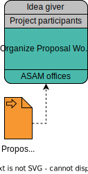

Prepare A Proposal Workshop
Responsible |
|
|---|---|
Involved |
|
Step |
 |
TL;DR |
|
| This page covers how to set up a proposal workshop. If you are interested in joining a listed workshop, check out Join A Proposal Workshop instead. |
Context
The first major event in the Proposal phase is the Proposal Workshop. Here, the project idea is presented to a broader audience for the first time and discussed.
The Idea Giver needs to prepare the event for it to be efficient and effective. ASAM provides a standard Proposal Workshop Gameplan to help with the preparation.
Goals Of The Proposal Workshop
Participants of the Proposal Workshop focus on the following topics, which are the technical core of the intended project proposal:
-
Use-cases, from the view-point of end-users.
-
Features, which shall be standardized.
-
Requirements, to be considered during the development of the standard.
Further items shall be discussed, which cover the proposal justification and project planning:
-
a justification of market relevance for the proposed changes or the new standard.
-
prioritization of features and requirements.
-
statement about backward-compatibility, in case of the further development of an existing standard.
The participants of the Proposal Workshop shall determine the proposal submitter.
Result
-
The Proposal Workshop is prepared at least 4 weeks ahead of time and listed on the ASAM website.
-
For an on-site workshop, a sufficient meeting room has been booked at the ASAM office (max. duration: 8h).
-
For an online workshop, an online event has been set up (max. duration: 4h).
-
The agenda covers the following targets:
-
Problem statement to the participants
-
Presentation and discussion of proposed content
-
Blocks for receiving feedback/input from participants
-
Next steps with ASAM
-
Example Agenda
| Time | Duration | Title | Responsible | Comment |
|---|---|---|---|---|
9:00 am |
05 - 15 min |
Arrival & introduction |
ASAM |
In the introduction, the moderator welcomes the attendees and introduces the agenda. |
9:15 am |
20 - 35 min |
ASAM introduction |
Managing Director ASAM |
The Managing Director of ASAM gives an overview about ASAM and how ASAM works. |
9:45 am |
20 - 45 min |
Problem statement |
Proposal submitter |
The proposal submitter presents the problem statement the project should solve, including use cases where the problem occurs. |
10:30 am |
05 - 15 min |
Break |
All |
|
10:45 am |
60 - 90 min |
Presentation block 1/2 |
Workshop member |
In this block, Proposal workshop members can present their take on the problem statement and how they would or do handle the issue in their company. |
12:15 pm |
45 - 60 min |
Lunch break |
All |
|
1:00 pm |
30 - 60 min |
Presentation block 2/2 |
Workshop member |
In this block, Proposal workshop members can present their take on the problem statement and how they would or do handle the issue in their company. |
2:00 pm |
30 - 60 min |
Proposal Content |
Proposal submitter |
The proposal submitter or a member of the writing team presents the technical content of the project proposal. |
3:00 pm |
30 - 60 min |
Discussion |
All |
Discuss the technical content of the project proposal and collect feedback that can be incorporated into the proposal. |
4:00 pm |
15 - 30 min |
Next Steps and Wrap up |
ASAM |
The ASAM moderator starts the following information and estimates with the group
|